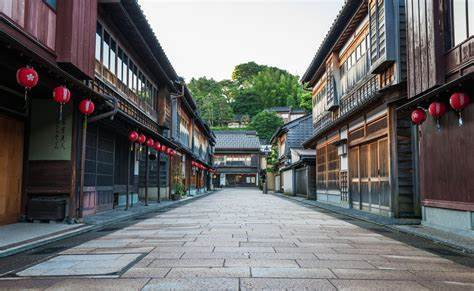
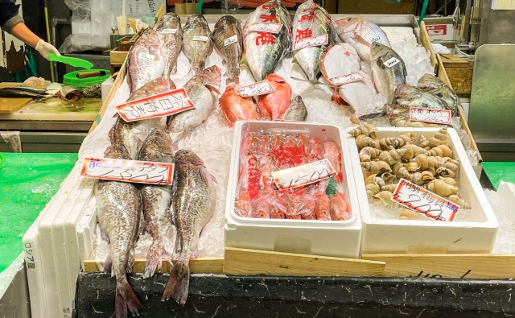
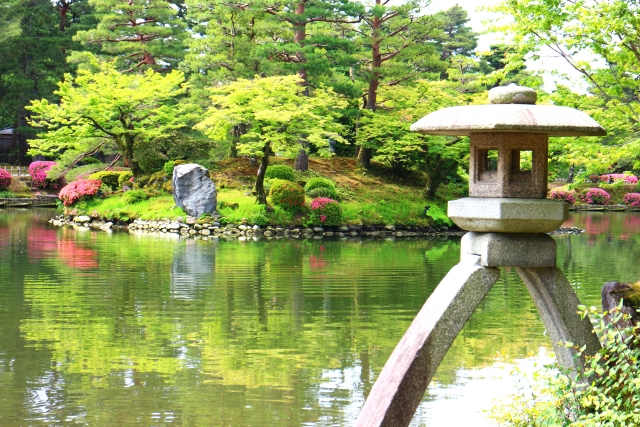
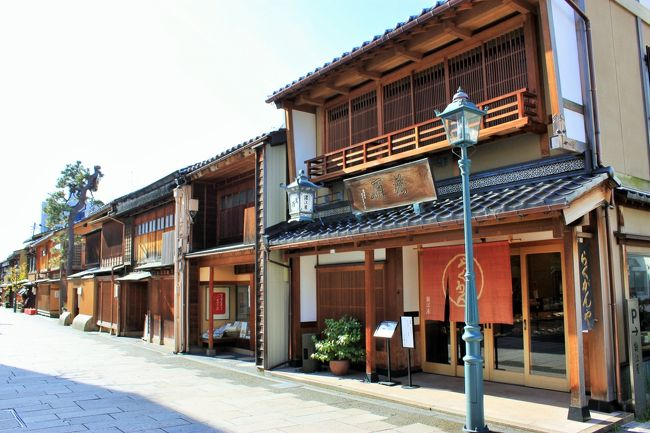
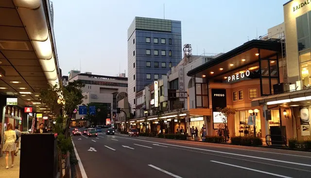
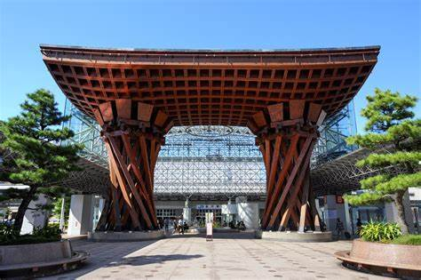

ひがし茶屋街
伝統的な町並みはいつでも美しく、和菓子の名店が集まっており綺麗な景色を見ながら食べる和菓子は最高です。
オススメは中田屋の出来立てきんつばです。
近江町市場
その日の朝にとれた種類豊富な新鮮な魚介類が特徴的な市場です。他にも野菜、果物そしてお肉も売っているので是非立ち寄ってみてはいかがでしょうか？
オススメは市場の中にある極上の海鮮丼です。お値段は約１５００円～３０００円くらいなのですが本当に美味しく特に日本海側で採れた魚なので関東から来られた人たちには是非オススメしたいです。
兼六園
金沢の観光スポットの代名詞といっても過言ではない日本三大名園に含まれる兼六園です。普段は大人は約３００円の入場料が必要なのですがサクラの時期は無料開放しているので是非行ってみてください。
オススメはサクラの時期のお花見をしながら美味しい団子を食べれるところです。
西茶屋街
ひがし茶屋街同様伝統的で美しい町並みを体験でき、規模こそひがし茶屋町よりも小さいですが片町から約徒歩５分ほどと近いので是非立ち寄ってみてください。
オススメはすごく個人的なことですが、知り合いのすごくおいしい豆腐屋の豆腐はもちろん夏季限定で豆腐アイスが非常に美味しいのでオススメです。下にお店のリンクを張っておきますので見てみてください。
食べログ片町&香林坊
片町は金沢のダウンタウンなので交通もすごく良くて他の観光スポットの真ん中にあるのでオススメです。
オススメは夜になると、居酒屋がとても見つけやすく、魚も楽しめるのでお酒を飲むなら片町一択。
金沢駅周辺
駅周辺は金沢フォーラスがありフォーラスの中のランチははずれがなくどれも美味しいうえにリーズナブルです。
オススメはお土産が豊富なあんとやりんとのお土産コーナーです。
２１世紀美術館

２１世紀美術館は現代的なアートがたくさんあることが特徴でアートの知識が全くなくても楽しめインスタに載せる用の写真も録りやすいのでオススメです。